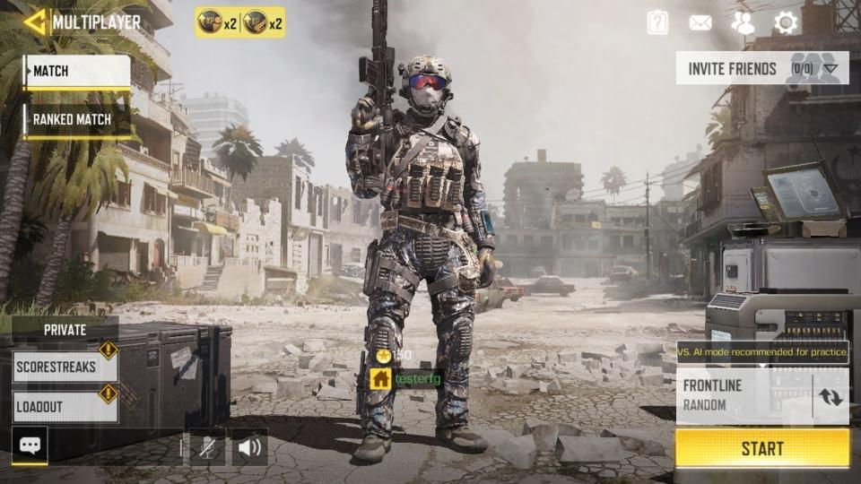

Call Of Duty(COD)
Call of Duty: Mobile is a free-to-play first-person shooter developed by TiMi Studios and published by Activision for Android and iOS. It was released on October 1, 2019. In its first month, the game had over 148 million downloads and generated nearly US$54 million in revenue, making it the largest mobile game launch in history.
Development and Release
Call of Duty: Mobile was announced in March 2019, with TiMi Studios, a part of the company Tencent Games, leading the development instead of Activision's Western development studios. Many of the game's features were revealed at this announcement, promising a familiar experience for fans of the console games. The aim of the game was to take familiar aspects from the franchise's previous games and allow users to access them from their mobile devices.It features two in-game currencies, as well as a battle pass.
Call of Duty: Mobile features many playable characters, maps, and gamemodes from previous games in the series. Different control settings were included to cater to player's preferences. A "zombies" game mode was added to the game in November 2019. This game mode follows the classic Call of Duty zombies "survival" formula where the player fights off endless waves of zombies, aiming to survive as long as possible. A "Raid" mode was also included where the player must defeat a set amount of waves of zombies before encountering one of two final bosses. Call of Duty: Mobile Zombies mode was removed on March 25th, 2020 due to the game mode not meeting Activison's standards. But, Activison said they might bring it back in a later update. Following a beta release in select regions in July 2019, the game was released worldwide on October 1, 2019.
Reception
Call of Duty: Mobile received "generally favorable reviews", according to review aggregator Metacritic. In its first month, the game had over 148 million downloads and generated nearly US$54 million in revenue, making it the largest mobile game launch in history.It was also nomited for various awards like Game Developers Choice Awards, SXSW Gaming Awards etc.This Game also won many awards like SXSW Gaming Awards, Pocket Gamer Mobile Games Awards etc.
148 million downloads and generated nearly US$54 million in revenue, making it the largest mobile game launch in history.It was also nomited for various awards like Game Developers Choice Awards, SXSW Gaming Awards etc.This Game also won many awards like SXSW Gaming Awards, Pocket Gamer Mobile Games Awards etc.